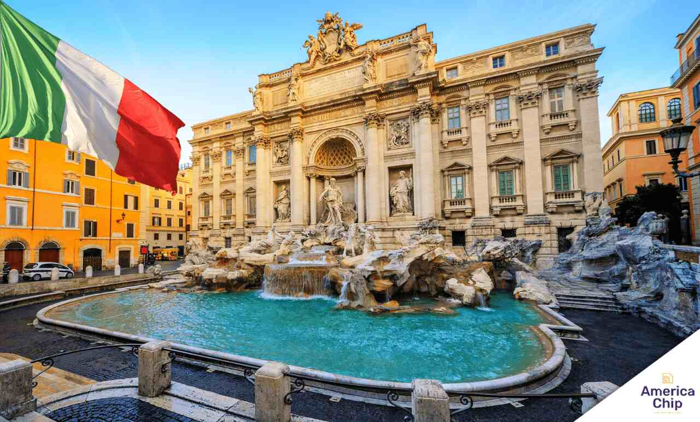
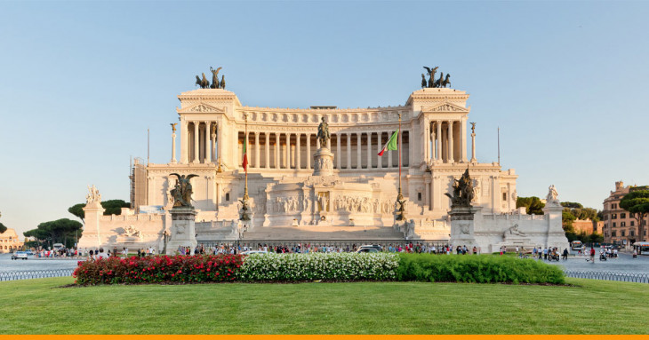
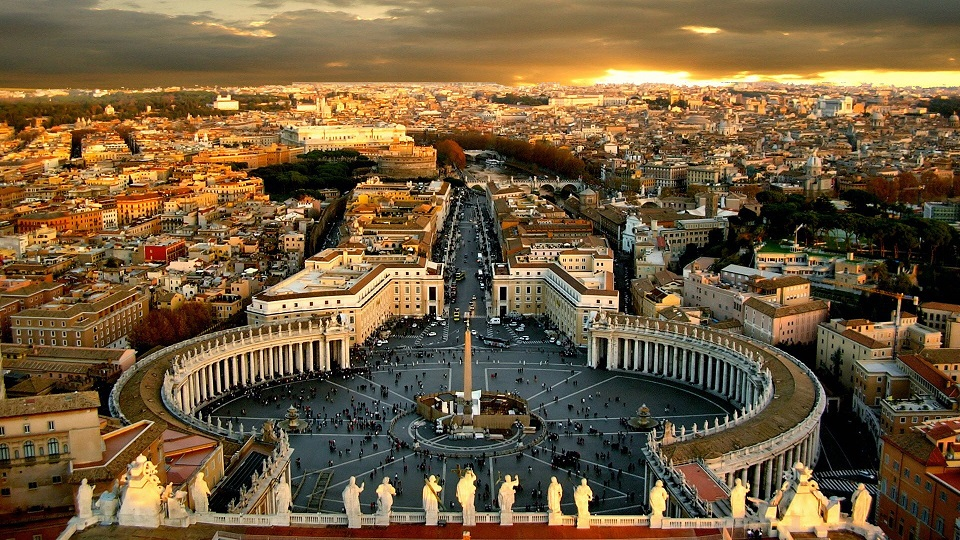

Coliseu
Um dos monumentos mais famosos do mundo, o coliseu representa a grandiosidade da Roma Antiga e suas histórias marcantes.

Roma, a capital da Itália, é um verdadeiro museu a céu aberto. Com monumentos históricos, culinária incrível e uma atmosfera única, é um destino que encanta qualquer viajante.
Um dos monumentos mais famosos do mundo, o coliseu representa a grandiosidade da Roma Antiga e suas histórias marcantes.

Explore as ruínas do coração da Roma Antiga, onde a história ganha vida.

Um dos pontos mais famosos de Roma, onde turístas jogam moedas e fazem desejos.

Saboreie massas, pizzas e pratos típicos que tornam a experiência ainda mais especial.

Um dos marcos mais importantes de Roma, com arquitetura grandiosa e uma vista incrível da cidade.

Um dos edifícios mais bem preservados da Roma Antiga, famoso por sua cúpula e história fascinante.

O menor país do mundo, cheio de arte, cultura e importância religiosa.